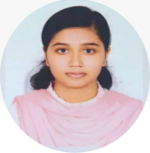

Resume of
Sumaiya Islam Nishat

Address: Bangshal Road, Dhaka, Bangladesh.
Telephone: 008801537668960
E-mail: sumaiyanishat2014@gmail.com
OBJECTIVE
To take and solve any challenge where I can use my knowledge with my potential and
creativity and in addition, I want to learn and share new things. My management and
analytical skills help me to find problems and solve them in a better way.
EDUCATION
-
BACHELOR OF SCIENCE (SOFTWARE ENGINEERING):
CGPA: 3.88 out of 4.00
Xianyang Normal University
Passing Year: June, 2022
Xianyang, Shaanxi, China;
-
HIGHER SECONDARY CERTIFICATE:
GPA: 4.33 out of 5.00
Govt. Women's College
Passing Year: 2017, Board: Jashore
Group: Science;
-
SECONDARY SCHOOL CERTIFICATE:
GPA: 4.89 out of 5.00
Sakhina Girls High School
Passing Year: 2015, Board: Jashore
Group: Science;
EXPERIENCE
SKILLS
- LANGUAGE: Bangla (Native); English (Fluent); Chinese (Proficient);
- TECHNICAL SKILL: Programming Languages: HTML, CSS, PHP, Java; Database: My SQL; Digital Marketing: SEO; Proficiency at Microsoft Office;
- PROFESSIONAL SKILL: Problem Solving, Language Assessments, Teaching Aid Development, Lesson Designing, Dynamic, Quick Learner, Leadership, Creative with New Ideas;
CO-CURRICULAR ACTIVITIES
- Internship: Digital Marketing at Rextent City, Jashore, Bangladesh (Feb 2018 to Jul 2018);
- Research Topic: Application Research of KNN Algorithm in Diagnosis of Diabetes;
- Former Vice-President of International Student Union of Xianyang Normal University, Xianyang, Shaanxi, China;
Sincerely,
Sumaiya Islam Nishat.